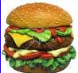

Report Unsafe Food
If you think the Health Department should add some food purveyor to the Places To Avoid list, you can take photos and file a complaint
Collect Photos and Videos
Shoot up to 11 pictures. The first picture is generally used to identify the whole set. Hit Save to close out the set.
You can rearrange and delete photos while shooting by turning your iPhone into Landscape Mode.
Select Report Unsafe Food Service
(c) 2009 MedCommons